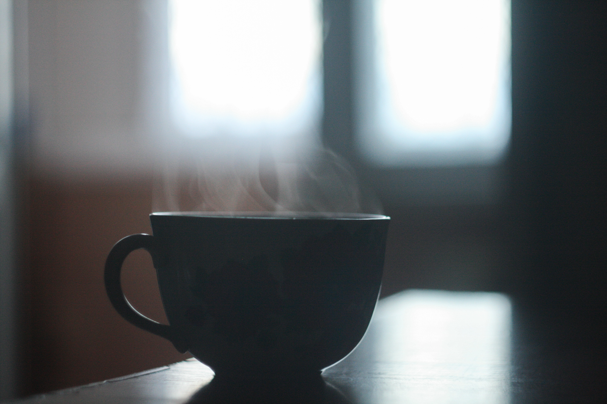

A cup is an open-top container used to hold liquids for pouring or drinking; it also can be used to store solids for pouring (e.g., sugar, flour, grains).
Squirrels are members of the family Sciuridae, a family that includes small or medium-size rodents.
$5.00 $0.61 $1.95
North America Europe Africa
1. liquid storage
2. art
3. collectable
1. collect nuts
2. hibernate
3. climb trees
